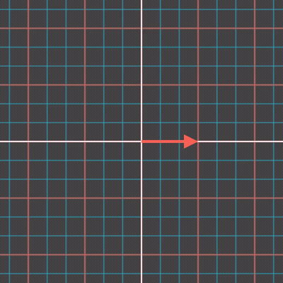
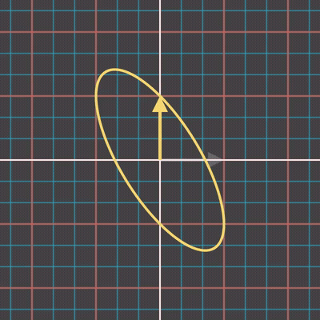
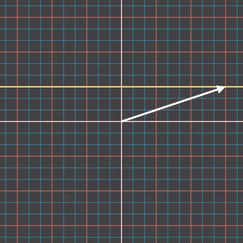

This is a bit of a wandering freestyle article. I'm full of a cold and my thoughts are a bit scattered. Let's cheer up with some easy algebra.
Consider the following couple of matrices, both members $\text{SL}(2,\R)$.
Let $T = \begin{bmatrix} {1} \quad {\phantom{-}1} \\ {0} \quad {\phantom{-}1} \end{bmatrix}$, a shear.
Let $S = \begin{bmatrix} {0} \quad {-1} \\ {1} \quad {\phantom{-}0} \end{bmatrix}$, rotation by 90 degrees anticlockwise.
On its own, $S$ is a matrix of order 4; rotating 4 times by 90° gets us back to normal; $S^4=I$. By combining $S$ and $T$ together we can delay
this to be order 6. We will show that $(ST)^3 = -I$.
$I = \begin{bmatrix} {1} \quad {0} \\ {0} \quad {1} \end{bmatrix}$, $ST = \begin{bmatrix} {0} \quad {-1} \\ {1} \quad {\phantom{-}1} \end{bmatrix}$, $(ST)^2 = \begin{bmatrix} {-1} \quad {-1} \\ {\phantom{-}1} \quad {\phantom{-}0} \end{bmatrix}$, $(ST)^3 = \begin{bmatrix} {-1} \quad {\phantom{-}0} \\ {\phantom{-}0} \quad {-1} \end{bmatrix}$.
If we are in $\text{SL}(2,\R)$ then $(ST)^3 = -I$.
If we are in $\text{PSL}(2,\R)$ where $-M$ and $M$ are the same matrix as $-M$ is $M$ rotated by 180° (which projective spaces consider the same because projective spaces are concerned with undirected line segments through the origin) then $(ST)^3 = I$. I should probably do a full article on projective geometry. I've spent a lot of time building my intuition of it in an approachable way, and there's multiple interpretations of projective objects that are of interest. But that's for another time.
$ST$ is of course also a member of the group $\text{SL}(2,\R)$, and like $T$ is also not a member of $\text{SO}(2,\R)$. It is a bit like a special orthogonal group matrix though, visibly sending basis vectors counterclockwise. And furthermore, being of finite order, it is a bit like a rotation matrix of a regular n-gon that one would find in a dihedral group. But as we will see, the images of the $\b{e}_x$ basis vector (and unit vectors in general) under $ST$ are not so evenly spaced out.
To see how $ST$ works
, maybe it's easier to look at $T$ and $S$ individually, or maybe it's easier to see the overall combined transformation. Let's look at both.
Inspecting $S$ and $T$ individually successively acting on $\b{e}_x$:
$\begin{bmatrix} {1} \\ {0} \end{bmatrix} \to_T \begin{bmatrix} {1} \\ {0} \end{bmatrix} \to_S \begin{bmatrix} {0} \\ {1} \end{bmatrix} \to_T \begin{bmatrix} {1} \\ {1} \end{bmatrix} \to_S \begin{bmatrix} {-1} \\ {\phantom{-}1} \end{bmatrix} \to_T \begin{bmatrix} {0} \\ {1} \end{bmatrix} \to_S \begin{bmatrix} {-1} \\ {\phantom{-}0} \end{bmatrix}$
And so overall 180 degrees of rotation has been reached. Do note that when $T$ pushes back
it is not a rotation; it is a shear as we mentioned, sending eg $\begin{bmatrix} {0} \\ {1} \end{bmatrix}$ of norm $1$ to $\begin{bmatrix} {1} \\ {1} \end{bmatrix}$ of norm $\sqrt{2}$.

Applying $T$ and $S$ is represented by the colours green and red.
Alternatively, to get a more continuous feeling for $ST$, we could see how it transforms all unit vectors.

Applying $ST$ to unit vectors (white arrows) and plotting the locus of resulting points (yellow).
The ellipse(-like?) path threads through $\begin{bmatrix} {0} \\ {1} \end{bmatrix}$, $\begin{bmatrix} {-1} \\ {\phantom{-}1} \end{bmatrix}$, $\begin{bmatrix} {\phantom{-}0} \\ {-1} \end{bmatrix}$, $\begin{bmatrix} {\phantom{-}1} \\ {-1} \end{bmatrix}$ as expected. We can also see the delay
in the yellow output arrow: if instead of $ST$ we were to apply just $S$, we would see the angle between the white input arrow and yellow output arrow stay constant at 90°, but applying $T$ first then $S$ we see the angle vary acutely (θ ≤ 90°).
How useful a continuous path visualization like this is when considering the discrete nature of the integers and $\text{PSL}(2,\Z)$ I'm not sure. It is more impressive that a finite-order matrix $S$ has been transformed into another finite-order matrix $ST$. It usually doesn't hurt to poke around like this though!
If one looks carefully at the columns of $I$, $ST$, $(ST)^2$, $(ST)^3$, one notices that the right column of a previous matrix becomes the left column of the next. This is because $ST$ sends the basis vector $\b{e}_x$ to $\b{e}_y$ $\begin{bmatrix} {0} \\ {1} \end{bmatrix}$, and $\b{e}_y$ is sent on its adventure to $\begin{bmatrix} {-1} \\ {\phantom{-}1} \end{bmatrix}$. Under repeated application of $ST$, $\b{e}_x$'s images are always chasing
$\b{e}_y$'s images, behind by one step. In my head I'm visualising this chasing both in the plane and in matrix form. We have already investigated the former above, so let us investigate the latter.
To compute the next power $(ST)^{n+1}$ from $(ST)^{n}$, shift the left column of $(ST)^{n}$ leftwards off screen, and shift the right column of $(ST)^{n}$ leftwards into the left column slot, and directly compute the new right column to be shifted in via $(ST)^{n+1} = (ST)^{1}(ST)^{n}$, with the right column of $(ST)^{1}$ having been explicitly specified.
One can splice the resulting matrices together horizontally into a wide 2-high tape of numbers, with the matrix brackets (or colouring here below) being a window that views a 2x2 section of this tape at a time. Because $(ST)$ is of finite order, both ends of the tape can be joined together into a loop. Think of either the tape shifting leftwards, or the matrix brackets shifting rightwards. $n$ shifts rightwards from the identity gives the $n$th power of $(ST)$.
$\begin{matrix} { \color{grey} {\dots} \quad {-1} \quad {\phantom{-}0} \quad {\phantom{-}1} } \quad {1} \quad { \color{red} {0} \quad {-1} } \quad {-1} \quad {\phantom{-}0} \quad {\phantom{-}1} \quad { \color{grey} {1} \quad {0} \quad {-1} \quad {-1} \quad {\phantom{-}0} \quad {\dots} } \\ { \color{grey} {\dots} \quad {\phantom{-}0} \quad {-1} \quad {-1} } \quad {0} \quad { \color{red} {1} \quad {\phantom{-}1} } \quad {\phantom{-}0} \quad {-1} \quad {-1} \quad { \color{grey} {0} \quad {1} \quad {\phantom{-}1} \quad {\phantom{-}0} \quad {-1} \quad {\dots} } \end{matrix}$
This behaviour and intuition also works for {{< cite/inline "Jordan Normal Form" "https://en.wikipedia.org/wiki/Jordan_normal_form" >}} block matrices. If $M = \begin{bmatrix} \lambda \quad 1 \quad 0 \\ 0 \quad \lambda \quad 1 \\ 0 \quad 0 \quad \lambda \end{bmatrix}$ then the superdiagonal matrix $N = (M - \lambda I) = \begin{bmatrix} 0 \quad 1 \quad 0 \\ 0 \quad 0 \quad 1 \\ 0 \quad 0 \quad 0 \end{bmatrix}$ can be made into a matrix tape
, this time with the columns shifting rightwards as the window shifts leftwards. This is because $N$ sends $\b{e}_1$ to $\b{0}$ and $\b{e}_{i}$ to $\b{e}_{i-1}$.
After $i$ applications of $N$ then $\b{e}_{i}$ too has been sent to $\b{0}$ (as $\b{e}_{i} \to \b{e}_{i-1} \to \b{e}_{i-2} \to \dots \to \b{e}_{2} \to \b{e}_{1} \to \b{0}$), thus the tape trails with the zero matrix. In other words $(M - \lambda I)^{\text{width}(M)} = \underline{\underline{0}}$, and we call $(M - \lambda I)$ {{< cite/inline "nilpotent" "https://en.wikipedia.org/wiki/Nilpotent" >}}
.
$\begin{matrix} { \color{grey} {\dots} \quad {0} \quad {0} \quad {0} } \quad {0} \quad {0} \quad { \color{red} {0} \quad {1} \quad {0} } \quad {0} \\ { \color{grey} {\dots} \quad {0} \quad {0} \quad {0} } \quad {0} \quad {0} \quad { \color{red} {0} \quad {0} \quad {1} } \quad {0} \\ { \color{grey} {\dots} \quad {0} \quad {0} \quad {0} } \quad {0} \quad {0} \quad { \color{red} {0} \quad {0} \quad {0} } \quad {1} \end{matrix}$
Very similarly for subdiagonal Jordan blocks shifting leftwards:
$\begin{matrix} {1} \quad { \color{red} {0} \quad {0} \quad {0} } \quad {0} \quad {0} \quad { \color{grey} {0} \quad {0} \quad {0} \quad {\dots} } \\ {0} \quad { \color{red} {1} \quad {0} \quad {0} } \quad {0} \quad {0} \quad { \color{grey} {0} \quad {0} \quad {0} \quad {\dots} } \\ {0} \quad { \color{red} {0} \quad {1} \quad {0} } \quad {0} \quad {0} \quad { \color{grey} {0} \quad {0} \quad {0} \quad {\dots} } \end{matrix}$
I think this is neat, particularly seeing the identity matrix overlap with the Jordan diagonals. Wikipedia refers to these matrices as {{< cite/inline "shift matrices" "https://en.wikipedia.org/wiki/Shift_matrix" >}}. They also remind me a lot of {{< cite/inline "linear feedback shift registers" "https://en.wikipedia.org/wiki/Linear-feedback_shift_register" >}}.
Again bringing up projective spaces just for some fun, $S$ is a rotation by 90°, which in $\text{PSO}(2,\R) \le \text{PSL}(2,\R) \le \text{PGL}(2,\R)$ is a half turn equivalent to $z \to -1/z$.
$\begin{bmatrix} {z} \\ {1} \end{bmatrix} \to_S \begin{bmatrix} {-1} \\ {z} \end{bmatrix} = \begin{bmatrix} {-1/z} \\ {1} \end{bmatrix} \to_S \begin{bmatrix} {-1} \\ {-1/z} \end{bmatrix} = \begin{bmatrix} {-1/(-1/z)} \\ {1} \end{bmatrix} = \begin{bmatrix} {z} \\ {1} \end{bmatrix}$.

I made this gif of rotation by 90 degrees in $P(\R^1)$ while testing how {{< cite/inline "Manim" "https://docs.manim.community/en/stable/examples.html" >}} handles creating gifs. My preference is to render to MP4 and then use ffmpeg separately to create the gif. I may as well commit the image here instead of it being lost.
In general in projective geometry we have $\text{PGL}(2,\mathbb{F})$ acting on $P^1(\mathbb{F})$ via $\begin{bmatrix} {a} \quad {b} \\ {c} \quad {d} \end{bmatrix} \begin{bmatrix} {z} \\ {1} \end{bmatrix} = \begin{bmatrix} {az + b} \\ {cz + d} \end{bmatrix} = \begin{bmatrix} {(az + b)/(cz + d)} \\ {1} \end{bmatrix}$, and since we have a well-behaved point at infinity
$\infty$ to handle $cz + d = 0$, we drop the redundant constant $1$ from our notation and just write $\text{PGL}(2,\mathbb{F})$ acts on $P^1(\mathbb{F}) = \mathbb{F} \cup \lbrace \infty \rbrace$ via $\begin{bmatrix} {a} \quad {b} \\ {c} \quad {d} \end{bmatrix} * z = \dfrac{az + b}{cz + d}$
.
You may recognise an example of this as {{< cite/inline "Mobius maps" "https://en.wikipedia.org/wiki/M%C3%B6bius_transformation#Projective_matrix_representations" >}} for $P^1(\mathbb{C})$, which we covered in first year Group Theory. Wikipedia has an article for $P^1(\mathbb{F})$ in general at {{< cite/inline "linear fractional transformations" "https://en.wikipedia.org/wiki/Linear_fractional_transformation" >}}.
I was originally going to title this article Delayed Rotation
as the delaying of $S$ by $T$ from order 4 to order 6 seemed interesting to me.
Then I noticed the shifting
behaviour of the columns of $(ST)^n$ and in my head connected it to Jordan blocks and linear feedback shift registers, which seemed even more interesting.
Then I looked back at the original image I saw on Twitter mention $S$ and $T$; they are generators of $\text{PSL}(2,\Z)$, the {{< cite/inline "modular group" "https://en.wikipedia.org/wiki/Modular_group" >}}, not just members of $\text{PSL}(2,\R)$ or $\text{SL}(2,\R)$. This seems like a topic for another time.
So I've settled on this article's title being about the shifting matrix tapes.
This is a bit of a sporadic article, but it perhaps gives some insight into the darting around that a mathematician can do. One can set out with a specific idea in mind, but end up having fun in other areas.